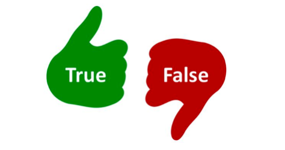
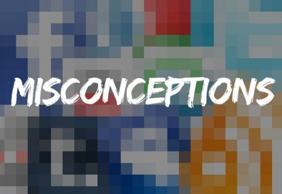
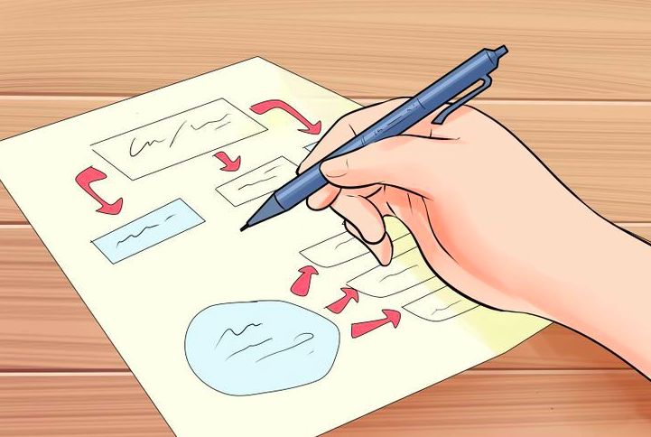
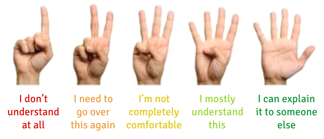

Do you ever find yourself asking "Are there any questions?" or "Does that make sense?" to a room of blank faces? By asking open-ended, content-specific questions you will develop a better understanding of your students' knowledge.
Checks for understanding are simple, non-graded, in-class activities designed to give you and your students useful feedback on the teaching-learning process. Checking for understanding offers an opportunity to uncover misunderstandings together so gaps in learning can be addressed before leaving class.
Effective checking for understanding requires making many decisions behind the scenes in order to gather data and take action. What do you want to know from students? What question will you craft to discern the extent and root of student misunderstanding? How is it aligned with your learning objectives? Which method matches the rigor of your question that will garner responses from every student or a strategic sample of your students? How are you collecting this data? Does your data reveal student confusion? If necessary, how will you reteach in a different way before moving on and identify which students need further assistance?
(Don't be like Stripe's teacher)
Prompt & Frequency
Implement checks for understanding in class frequently and with flexibility. Ensure that you’re paying attention to all student responses to assess whole-class and individual understanding. Use the following prompts and question stems to discern the extent and root of student understanding and misunderstandings:
Prompts and Question Stems

Prior Knowledge Inventory
Write 1-3 simple questions at the start of class when introducing a new topic. Ask about previous related knowledge and use this information to determine the best starting point for your lesson. You can use a Google Form or collect post-its to sort responses.
Make a Connection
Ask students to make a connection to the topic based on something they know or have experienced, or previous material in the classroom. "How does ... relate to ...?"
Create an Analogy
Present students with an analogy prompt such as "A designated concept, principle, or process is like ... because ..." and ask them to fill in the blanks. Best used
Compare & Contrast
Ask students to compare and contrast two ideas using a Venn Diagram. This can be effective when introducing a new concept and comparing it something previously covered.
Focused Listing
Choose an important concept from your lesson and ask students to list ideas closely related to that focal point. Ex: "Write up to 10 words that define… " or "List 4 important characteristics of…"
Most Important
Ask students to describe the most important (or interesting, confusing, surprising, etc.) thing they learned in one minute. Best use is at end of class to wrap up.
Additional Question Stems:
- What are the characteristics/parts of...?
- In what other ways might we illustrate...?
- What is the big idea, key concept, moral in ...?
- What ideas/details can you add to ...?
- What is wrong with ...?
- What might you infer from ...?
- What conclusions might be drawn from ...?
- What are you assuming about ...?
- What might happen if ...?
- What criteria would you use to evaluate ...?
- What evidence supports ...?
- How might we prove/confirm ...?
- How might this be viewed from ...'s perspective?
- What alternatives should be considered ...?
- What approach/strategy could you use to ...?
Follow-up Probes:
- Why? What do mean by...?
- How do you know? Could you give an example?
- Do you agree? Tell me more.
- Explain. Can you find that in the text?
- What data supports your position?
- But what about ...?
Checking for Understanding Methods
Your "methods" are how you ask the questions/prompts you established above. Will students be responding in writing? out loud? independently? in groups? Will all students have the opportunity to respond or will you select a strategic sample? See below for common methods educators use:
Methods
Think-Pair-Share
Think: Give students independent time to think about a question or prompt (30 sec).
Pair: Compare ideas and identify best answers with a partner (1-2 min).
Have pairs share their thinking with the class in round-robin fashion or calling on pairs.
(Optional: Record responses on the board.).
Stop and Jot
Give students a certain amount of time to write down their thoughts on a topic that was just covered. Provide a prompt with a higher level thinking question (reference the Bloom’s Taxonomy question stems).
Explain in Your Own Way
Ask students to explain something in their own words, drawings, charts, etc. on the whiteboard walls. Allow time for students to walk around and view each others’ explanations.
Gestures
Ask a question in a selected-response format (ex: multiple choice, agree/disagree, or yes/no) and have students signal their answers using some sort of visual sign (number of fingers, sign language, standing/sitting, moving to ether side of the classroom).
1-2 Pairs
Prompt: “Raise two fingers if you understand the material well. Raise one finger if you understand this material okay.” Then pair sets of 1’s and 2’s. You may ask the 2's to re-explain the information to 1’s, work on the next exercise together, or pair program together.
Give Me Five
Ask an open-ended question and tell the class you want at least five answers from five different students. Provide wait time between answers. Use this as an opportunity to hear from students who haven’t participated yet.
Targeted Questions
Ask a quick series of carefully chosen, open-ended questions directed at a strategic sample of the class and executed in a short time period, often a minute or less.
Misconception Check
Present students with common or predictable misconceptions about a designated concept, principle, or process. Ask them whether they agree or disagree and explain why. The misconception check can also be presented in the form of a multiple-choice or true-false quiz.
Study Guide
What are the main topics, supporting details, important person's contributions, terms, and definitions?
Fist to Five
Take the pulse of the class by asking students to give you a “fist to five” about how well they understand a concept. Five fingers symbolizes complete understanding; zero fingers means they don’t understand at all.
Three Things
Ask students to list 3 things that a fellow student might misunderstand about a topic. Discuss with a partner and share out. Best use: after teaching difficult information, to help students empathize with others in the class, addressing ideas which they may also misunderstand.
3-2-1 Exit Ticket
Ask students to submit the following: Three things you found out. Two interesting things. One question you still have.
Questions in a Hat
Put simple recall questions in a hat and pass around for students to pull out a question and answer it. Or have students come to the front of the room and answer in front of the class.
Whip Around

Prompt: Pose a prompt that has multiple answers and ask students to write down as many responses as possible. “Whip” around the room, asking students to share one response at a time. Students should not repeat a response; they must add something new. Afterwards, discuss which ideas and themes showed up most in their responses.
Gestures
Additional Resources:
Following Up with Data
Effective checking for understanding means gathering data constantly and acting on it immediately. The second part is often harder to do, but just as important.
Gathering Data Strategy: Tracking, Not Watching. Once you have a plan in place for what students need to accomplish, the next step is being intentional about how you observe and check students’ work and gather data to know whether students “got it.” Rather than scanning to monitor behavior, you are scanning to fix misconceptions in the moment! There are two pieces to Tracking, Not Watching.
Decide what you want to focus on. What do I want to ensure that 100% of students understand during this next chunk of time? Track these questions specifically and ignore other items or distractions.
mmmmmm
Methods for Gathering Data:
1. Via Questioning
- Reject Self-Report: The answer to “everybody got it?” is always yes and almost never accurate.
- Targeted Questioning: Ask questions to assess mastery after key steps in your lesson plan
- Strategic Sample Using Cold Call: Ask your targeted questions of students across the spectrum of likely skill
- Test for Reliability: Ask follow-up “why” and “how” questions to make sure the positive result is replicable
- Plan for Validity: Align to the rigor and format of what your students will ultimately be accountable for
2. Via Observation
- Standardize the Format: Specify where students should write, what should be in the margin and where
- Tracking, Not Looking: Look for number and type of errors, tracking them so you can refer back to these data
- Show Me: “Slates”; Hand Signals
- Affirmative Checking: Establish ‘check points’ where students obtain approval for moving on
Gathering Data via Questioning
Gathering Daya via Observations
- Do you agree? Tell me more.
- Explain. Can you find that in the text?
- What data supports your position?
- But what about ...?